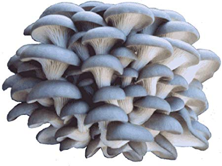
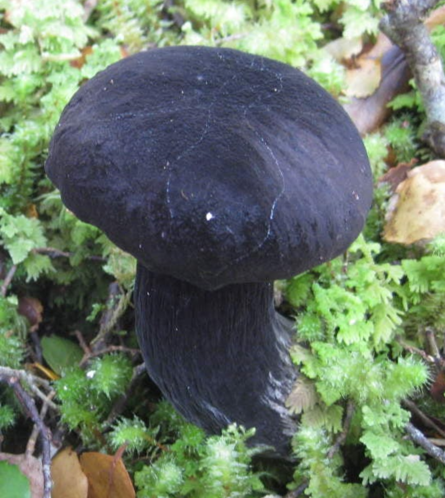
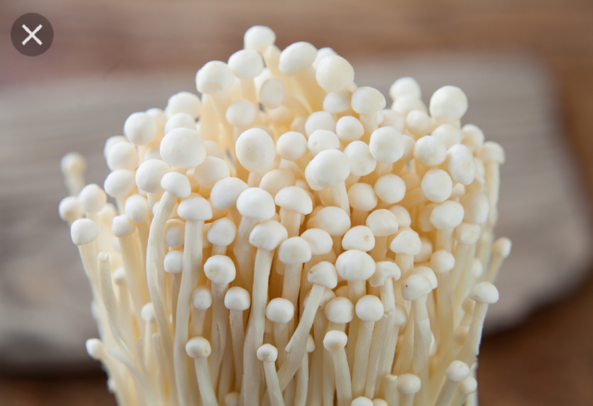
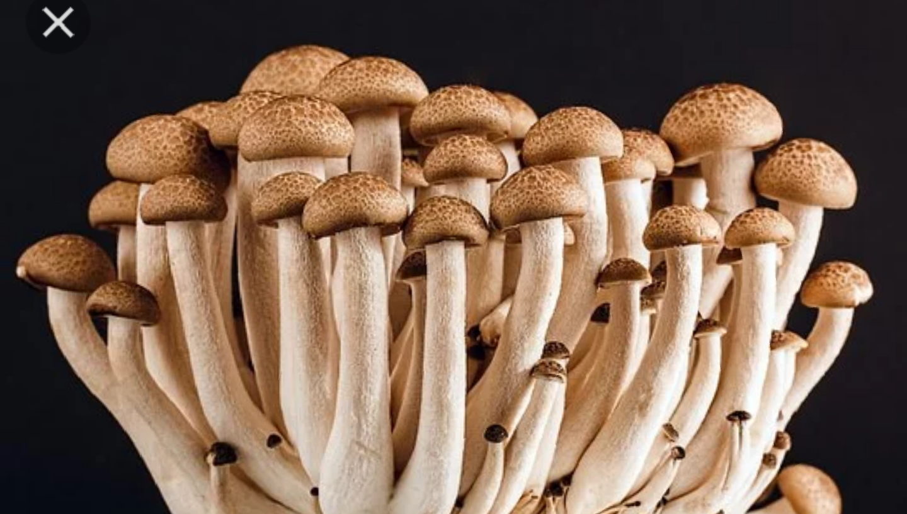

HOW TO GROW MUSHROOM
Growing mushroom at home is a task that any gardener interested in growing their own food should attempt. Mushrooms are healthy additional to any diet, as they are low in calories and fat,high in fiber, and contain high amount of potassium and selenium. Mushrooms are best grown indoors where the temperature and the light conditions can be more readily managed. learning how to grow mushroom indoors is a matter of managing their grow conditions carefully.
the first thing you needs to put into considaration before growing mushroom: Decide on the type of mushroom you want to grow.there are three type of mushrooms that can easily be grow at home namely:OYSTER,WHITE BUTTON,AND SHIITAKE. The idea of growing each mushroom is similar but the ideal of growing substrate differs. OYSTER mushrooom grow best in straw or coffee ground(describe later); SHIITAKES grow best on hard wood sawdust. BUTTON grow best in composted manure. this diferent substrate reflect the different nutritional needs for each species. however, each of this species can be grown readly enough in sawdust or straw. make sure that if you using sawdust it's should be fromm untreated wood. choosen the type of mushroom to grow is a mater of tast. You should grow the type you most want to eat,s


Growning mushroom in sawdust, it's neccessary to sterilized the sawdust before inoculating with the spawn. this helps to killed off any micr-organisms that could compete with the mecelia. to sterilized substrate, place it in a micr-wave-safe bowl and add water to make it straw. Place the bowl in a microwave and heat untill the water has boilled off.this killed off any micr-organism, leaving the substrate to receive the mushrooom mycelia. you may to work in batches in order to sterilize all of the straw. After doing this, mushroom spawn needs to be spead into the substrate thoroughly before producing mushrooms.A warm temperature ecourage this growth. After choosen the substrate best suitable for your mushroom soecies, place a few handfuls of it into a baking pan, a shallow pan with a large surface area will provide the most room for your mushroom to grow. Mix the spawn into the stustrate with a sterilized utensil. place the baking pan on a heating pad set to 21degree. this the ideal temperature to encourage growth. Leave the setup in a dark environment such as a cabinet, for about three weeks. this will allow the mushroom mycelia to pernetrate into the substrate. After two week check the substrate . if you notice green,brown moldy spot on the substrate, removed and throw.
In about three weeks you should see small mushroooms appearing. continue to keep your environment moist, cool, and dark to encourage their growth. When the mushroom caps separate fully from their stems, they are ready to harvest. you can plug the mushroon out with your fingers, but the risk damaging the new developing fungi beneath the surface instead, use a sherp knife to cut the mushrooms at the base of the stem.


go to home page
go to page 3